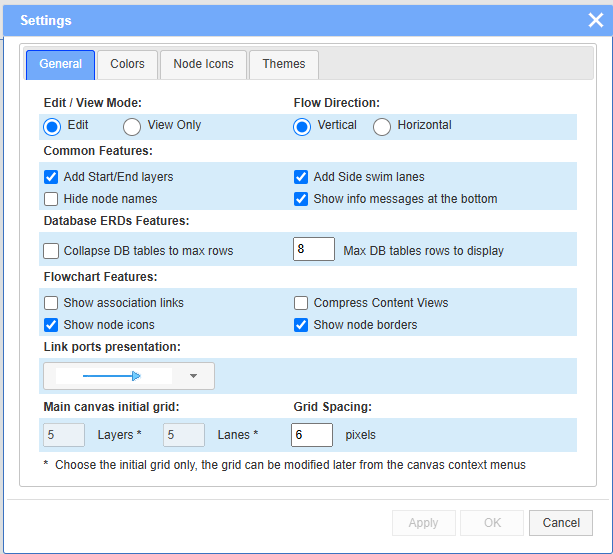
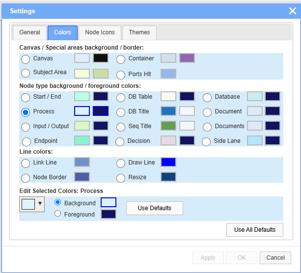
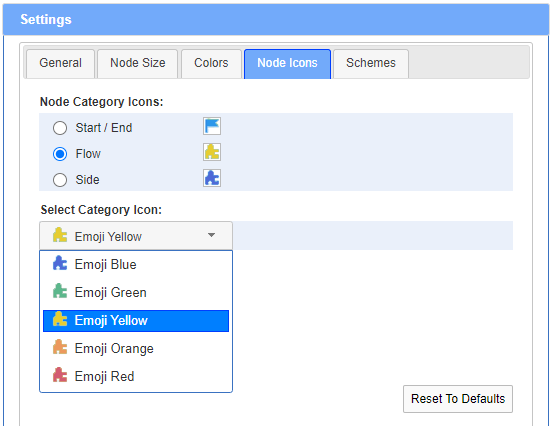
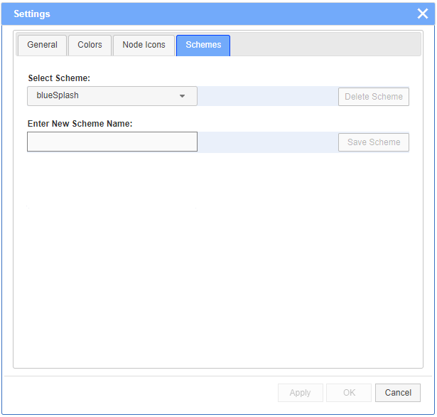

The Settings dialog applies to all supported diagram types. It can be invoked at any time from the Settings icon on the toolbar:
The General tab of Settings dialog offers several different options. The Horizontal direction applies to flowcharts only.

The Colors tab allows to select the background and/or foreground colors, as well as the border colors, of the node types and the other common graphical elements. The selections usually affect the currently opened diagram and will be saved as part of its output JSON file. In addition, the current set of color selections can be saved as a named color scheme in the Schemes tab.

The Node Icons tab allows to choose the nodes icons from a list of images. The selections apply only for Flowcharts. Nodes are grouped by categories.

The Schemes tab allows to save named color selections in a local configuration file for further use. There are 3 built-in color schemes: default, blueSplash and greenSplash. The selected color scheme will be applied on the next new diagrams. All color selections may be modified at any time as desired.
